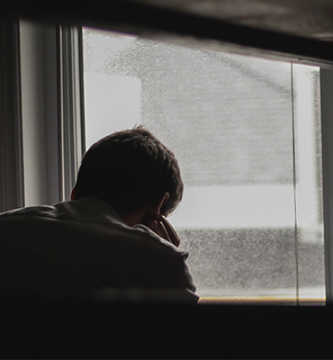
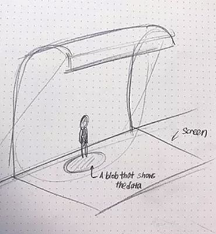

Context:
The government is responsible for making decisions regarding a lot of the built environment around us. Through the course Designing Interactions @ the MIT Media Lab, in collaboration with Phillips lighting, my team and I explored how light could be used as a medium for a city’s government to show care for their community.
Opportunity:
During the winter time in Boston, the city receives the least amount of sunlight compared to other times in the year. This led my team to explore and learn about SAD, or Seasonal Affective Disorder. We did not aim to cure SAD, but rather reframed the prompt to practice empathy toward those who experience symptoms like that from SAD.
Outcome:
This group project lead to the outcome of creating LightLounge, a resting area in transit stops that allows people to recharge under simulated sunlight. This improves their commuting experience and provides them with the health benefits of normal sun exposure (without the UV damage of course).
Project Logistics:
As a team of four, we effectively divided roles as follows:
Haley Park: design concepts + coding for prototypes + illustrations
Anastasia Farnum: user research + design concepts + CAD
Richard Huizar: prototype's mechanical build + electronics
William Liu: healthcare research + business plan
Project Phases:
We accomplished 3 major milestones toward the prompt:
+ creating a focus on a specific user need
+ exploration and testing
+ the story of LightLounge
This project was sponsored and mentored by Phillips Lighting.
View the [archived] feature on the project here.
*note: the design lab has a newer site, found here.
CREATING A FOCUS
About SAD:
After surveying other city goers about where they notice light in their daily journey, my team and I became informed about points of interaction people have with public lighting during their daily commute. With consideration of how light (or lack of it) makes an impact on emotional and physical well being, we decided to reference the condition SAD (Seasonal Affective Disorder) to inform our project. With the fact that SAD is heavily influenced by environmental lighting, it gave us a specific case to design for which would also affect those who relate to the symptoms of SAD.
Seasonal Affective Disorder (SAD):
4 out of 5 people who experience SAD in the U.S. are women. The main age of people experiencing SAD is between 20 and 30 years. Depression is estimated to cost the U.S. healthcare system $201 billion annually. Symptoms include: depression, anxiety, mood changes, sleep problems, lethargy.

SAD is more common in the winter months in the northern hemisphere, where the amount of sunlight during the daytime is greatly decreased. Symptoms include: depression, anxiety, mood changes, sleep problems, lethargy.
Currently, in-home therapy lights are commonly used as a treatment for those experiencing SAD. An optimal light therapy regimen consists of utilizing light with 2,500 lux (unit of measurement for amount of light per square meter) intensity for 2 hours daily.
The light emission has to be no more than 61 cm (24 in) away from patient’s face. For the treatment to be effective, the light must enter the eye of the patient indirectly. A mere skin exposure to light is not sufficient.
Stakeholders Map:
In order to map out opportunity areas for where the city could provide a tool to help with SAD, we created a stakeholders map using Cambridge as our example city.

EXPLORATION AND TESTING
Exploring the Field:
Based on the average user’s journey, a public transportation area became a very apparent opportunity space to host a lighting project. Considering that only about a third (35.3%) of those suffering from severe depression seek treatment from a mental health professional, it is important to implement the project in an area that is easy to access and a natural part of a user’s journey. In a station, people can enter in and out freely for light therapy on their way to work.
We used Kendall Station as an example. We took consideration of environmental and usage details such as: designated waiting area, people not being allowed to walk on yellow strip, the space available for the benches and the space needed for people to walk on when they come out of the train. We also considered variable ceiling heights and different uses for the wall behind the benches.

Concepts:
After the team observed and interviewed fellow public transit riders, we gathered together to create design concepts for ways to modify the space in a way that speaks to the emotional health of riders. Using feedback on interviewee’s perception of the space, we explored ways that riders could communicate how they feel to others in the station through the medium of light, in an effort to make the environment feel less “cold”. We also wondered how light itself could serve as an emotional aid in a similar way to the tools for SAD, which we learned about in the research phase.
In our first design exploration, we were thinking that users would openly share how they feel with some sort of interactive mood board that would be placed in the station. In this case, the color of light emitted from the object would be from a gradient scale. As people input their moods by pressing on an emoji the resonate with in that moment, the mean is calculated and so a color from a respective gradient scale would be chosen to display.
Here, we took away the emojis because a mood is not necessarily representative of overall wellness and also some user testers felt pressured to choose what they thought would be appropriate to have displayed. In this design, users still interact but by choosing colors on a physical interface, to see that in the area that they are waiting in. Though it gives the users the power to change their environment, it wasn’t strategic enough in combating SAD.
In this design exploration, the user still interacts with space since their presence is needed for it to turn on. Their atmosphere still changes positively, but here we have the opportunity to install lighting that is found in therapy lights since the user is in closer proximity to the location of the lighting. We decided to explore this idea further for our final design.
The Story of LightLounge:
With our final direction of LightLounge, a city can actively counteract negative mood changes caused by weather and sunlight deficiency through the use of light in a public high traffic area.
Mental health is often neglected, and a caring city is one that desire happiness for its citizens.
We made a working prototype to test how the lights would turn on with the tap of a card, and how if it could turn off due to proximity using an RFID card and reader with LED lights.
LightLounge Concept Development:
